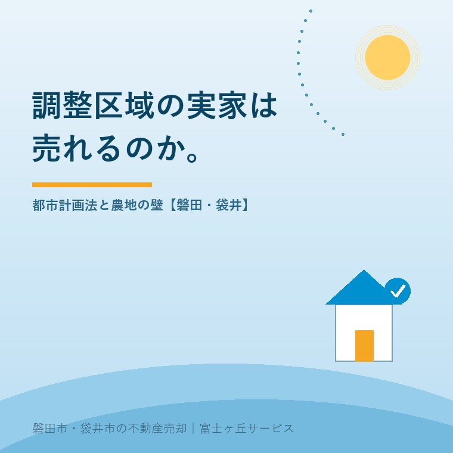

2026年8月5日｜カテゴリ：土地取引・法規制

この記事の要点
Q. 実家が市街化調整区域だと言われました。もう売れないということですか？
A. 「売れない」ではなく「買った人が建て替えられるかどうかで、価格も買主層もまるで変わる」が正確です。磐田市は昭和51年10月12日に線引きが行われ、市域の約8割が市街化調整区域。それでも既存宅地・線引き前宅地・分家住宅といった制度に当てはまれば住宅は建てられますし、実際に売買されています。逆に、その資格が無い土地は価格が一段も二段も下がります。磐田市・袋井市では、介護施設の運営から不動産事業を始めた富士ヶ丘サービスのような地域密着の会社に、まず「建てられる土地かどうか」の確認から相談するという選択肢があります。
「実家を売りたいのですが、調整区域だと不動産屋さんに断られました」──この地域で最も多いご相談の一つです。実家には4つの値段があるという話を以前書きましたが、市街化調整区域はその「値段の幅」が最も大きく開く土地でもあります。
結論から言えば、調整区域の家は売れます。ただし「誰が、何のために買えるのか」が法律で先に決まっている。その仕組みを知らないまま売り出すと、時間だけが過ぎていきます。
市街化調整区域とは、都市計画法に基づいて「市街化を抑制すべき区域」と定められたエリアのことです。無秩序に街が広がるのを防ぐため、原則として新しい建物を建てさせない、というのが制度の趣旨です。
磐田市は、昭和51年（1976年）10月12日に市街化区域と市街化調整区域を分ける「線引き」を行いました。市の面積約1万6千ヘクタールのうち、約80％（約1万3千ヘクタール）が市街化調整区域です（磐田市公式サイト）。つまり、磐田市で「実家が調整区域」というのは例外ではなく、むしろ多数派なのです。
ここで大切なのは、調整区域＝建築禁止ではないという点です。既にある建物の建て替えや、例外的に認められる建築は可能です。問題は、その「例外」に当てはまる資格が、あなたの実家にあるかどうかです。
磐田市の場合、住宅を建てられる（＝建て替えられる）主なパターンは次のとおりです。いずれも市の窓口での事前確認が前提になります。
| 類型 | 内容 | 売却への影響 |
|---|---|---|
| 既存宅地 | 平成12年の法改正前の都市計画法に基づき「宅地である土地」として確認を受けた土地。第二種低層住居専用地域に建てられる建築物が可能 | 建て替え前提で売れる。一般の買主も検討できる |
| 線引き前宅地 | 既存集落内で、線引き（昭和51年10月12日）の時点で宅地だった土地。一戸建専用住宅が建築可能（地域の実情により他用途も） | 同上。磐田の実家で最も多い救済ルート |
| 分家住宅 | 線引き以前から本家が所有していた土地に、その親族が自己用の住宅を建てる制度 | 買主が限定される。第三者への売却には転用手続きの確認が必要 |
| 都市計画法34条11号（条例による区域指定） | 市が条例で指定した区域内では、一般の人でも住宅を建てられる | 指定区域なら価値が大きく上がる |
| いずれにも当たらない | 農地・山林のまま、または建築の根拠がない土地 | 建物が建てられない前提の価格に。買主は隣地所有者・農家などに限られる |
同じ集落の、道を挟んだ向かいの土地でも、この資格の有無で坪単価が数倍違うことがあります。査定の話で「机上査定と現地査定は別物」と書いたのは、まさにこういう土地のことです。役所で調べなければ、正しい値段は誰にも出せません。
調整区域のルールは固定されたものではなく、市の判断で緩和されることがあります。磐田市では、都市計画法第34条第11号に基づくJR豊田町駅東側地区の指定区域について、令和8年（2026年）4月1日から申請の受付が開始されています（磐田市公式サイト）。
34条11号の区域指定とは、市街化区域に隣接・近接し、一定の市街地が形成されている区域を市が条例で指定し、その中では一般の方でも住宅などを建てられるようにする仕組みです。指定区域に入るかどうかは、その土地の売れやすさを根本から変える情報です。
「うちの実家は駅の東側だ」という方は、一度確認する価値があります。窓口は磐田市 建設部 都市計画課 土地対策グループ（0538-37-4935）。当社でも代わりにお調べします。
調整区域の実家には、たいてい田や畑が付いてきます。ここで登場するのが、都市計画法とはまったく別の農地法です。田畑・山林を相続した話でも触れましたが、あらためて整理します。
| やりたいこと | 必要な手続き | ハードル |
|---|---|---|
| 農地を農地のまま売る | 農地法3条許可（農業委員会） | 2023年4月1日に下限面積要件（都府県50a）が廃止され、面積の壁は消えた。ただし全部効率利用・常時従事・地域との調和の要件は継続 |
| 農地を宅地などに変えて売る | 農地法5条許可（転用＋権利移動） | 市街化調整区域では原則として厳しく制限される。都市計画法の許可も別途必要 |
| 農振農用地区域（いわゆる青地）の農地 | まず農振除外の手続き | 原則として転用不可。除外には時間がかかり、認められないことも多い |
| 宅地（家の敷地）だけを売る | 農地法の対象外 | 都市計画法の建築要件のみで判断できる。分けて考えるのが実務の第一歩 |
2023年4月の下限面積要件の廃止は、実は実家じまいにとって追い風です。以前は「50アール（5,000㎡）以上耕さない人には農地を売れない」という壁があり、小さな畑は事実上、身動きが取れませんでした。今は面積の制限がなくなり、小規模な農地を近所の方や新規就農者に譲る道が開けています。ただし、耕作の実態が求められる要件は残っているため、誰にでも売れるわけではありません。
ここが、この地域で仕事をしていて一番説明に時間がかかるところです。磐田市と袋井市は、都市計画のルールがそもそも違います。
つまり、袋井市の郊外にある実家は、見た目がどれだけ田園の中でも「市街化調整区域だから建てられない」という話にはなりません（もちろん農地法や接道の要件は別に必要です）。一方、磐田市で同じような景色の土地は、まず調整区域を疑う必要があります。
「隣の市の親戚は普通に建て替えられたのに、うちはダメだと言われた」──この違いの正体は、たいてい線引きの有無です。エリアによる売れ方の違いは、相場だけでなく法規制からも生まれています。
④は本当に大切なので繰り返します。古家を親切心で解体してしまい、更地になった瞬間に「建て替えできない土地」になって値段が半分以下になった──この地域で実際に起きている話です。
調整区域の実家は、時間をかけて調べれば必ず出口が見つかる土地です。秋商戦に向けた準備の記事でも書いたとおり、役所調査や農地の手続きには数か月かかります。夏のうちに動き始めるのが一番です。
富士ヶ丘サービスは、磐田市・袋井市に特化した地域密着の会社として、都市計画課・農業委員会での調査から出口の設計までお手伝いしています。「調整区域だから」と断られた実家こそ、実家じまい相談室へお持ちください。
ふじがおか実家カルテ｜「建てられる土地か」を先に確定させる
調整区域・農地つきの実家こそ、調査から始める。
登記情報・公図・固定資産税通知書から、区域区分／建て替えの資格／農地の地目と青地白地の別を宅建士が調べ、現実的な出口の選択肢を1冊にまとめてお渡しします。
本記事は2026年8月5日時点の公開情報に基づく一般的な解説です。市街化調整区域の建築可否・農地の許可基準は自治体および個別の土地の事情により異なり、最終的な判断は磐田市 都市計画課・農業委員会等の窓口での確認が必要です。個別のご相談は当社までどうぞ。
磐田市・袋井市の実家じまい・相続空き家相談
固定資産税通知書だけでも相談できます
住所があいまいでも、通知書や写真から名義・道路・農地・残置物の確認順を整理します。カルテ申込またはLINEで状況を送ってください。
富士ヶ丘サービス株式会社／静岡県磐田市見付5789番地1／TEL:0538-31-3308／静岡県知事 (2) 第14083号／代表取締役・宅地建物取引士 大石 浩之